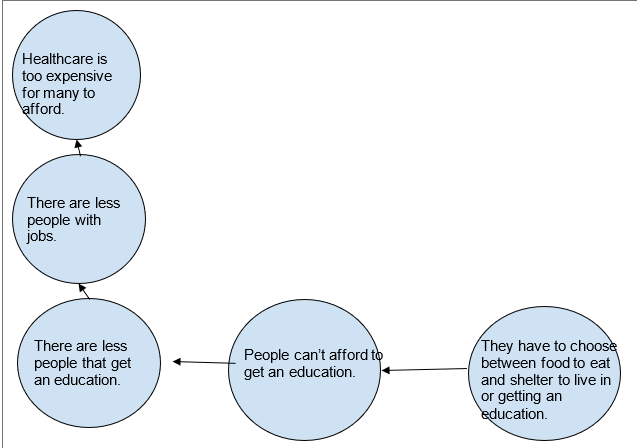
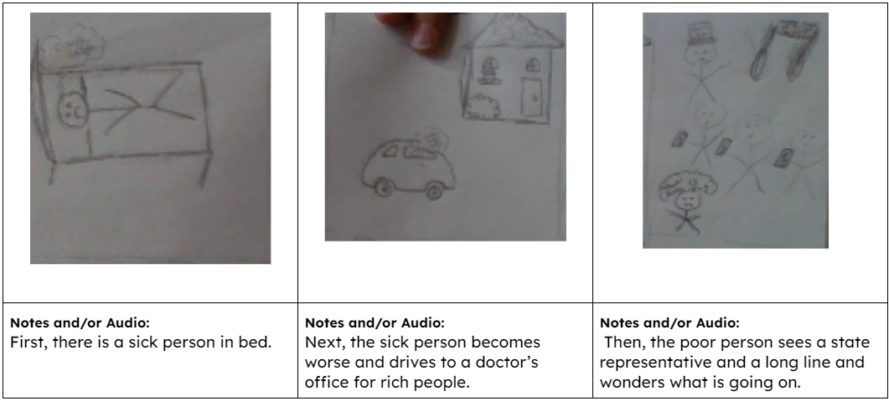

In this section, you first start to think about some ongoing soical issues you are interested in. Then, you fill out an organinzer called the 5 Whys. First you name the issue. Then, you would says what are the causes of this issue. Then, you would say what are the causes of the new issue and so on and so forth until you can't think of any more causes and effects. Then, you will explore and esearch more on the topic you are interted in. Finally, you make a cause and effect diagram of your social issue. Here is an example of what I did:
In this section, I started off with figuring out the purpose of my story and identify who my audience is. Below is my work: Your intended EFFECT for your piece: Audience: The intended audience is state and local government. Purpose: The goal of this is to inform people about the effects of many people not being able to get an education and to persuade more people to fund for schools and provide people with money to be able to go to school.
In this step, I started to figure out who my characters were and what my setting was. Below is my work: Protagonist: A sick person needs to go to the doctor and receive care to get better. Strengths and weaknesses: Doesn’t have enough money Antagonist:The state representative doesn’t allow the sick person to receive care unless money is provided. Stengths and Weaknesses:Decide whether people receive care or not
In this step, I think up my story and I will decide whether I want to do a stop motion animation, zoetrope, etc. I decided to make a stop motion animation.
Here is my storyboard:

In this step, I started to create the charcters and objects that were going to used for the animation. I made the bed, car, and sick person.
Here is just one of the items I made.

In this step, we started working with the dragonframe software and used the camera to take pictures of the settign and characters to make the stop motion animation.